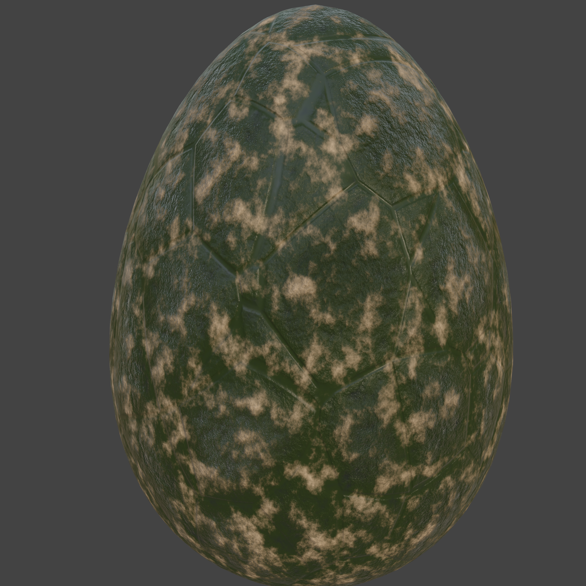
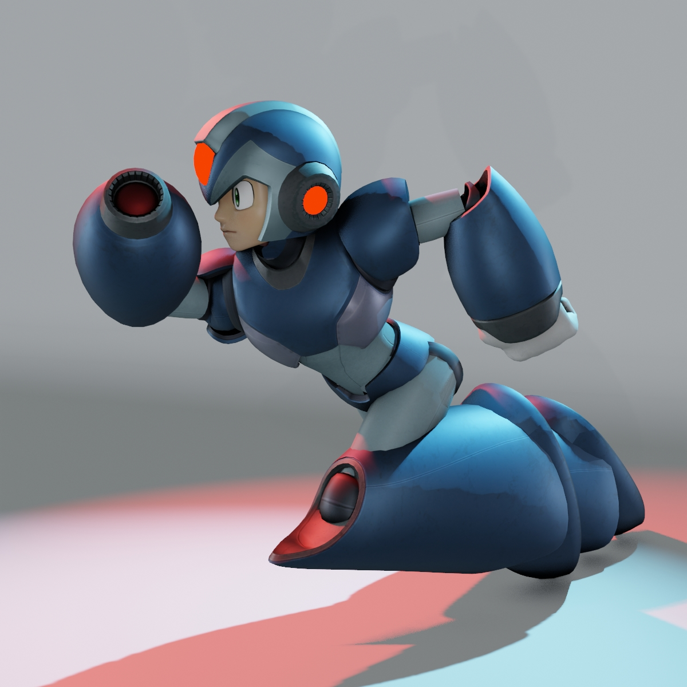
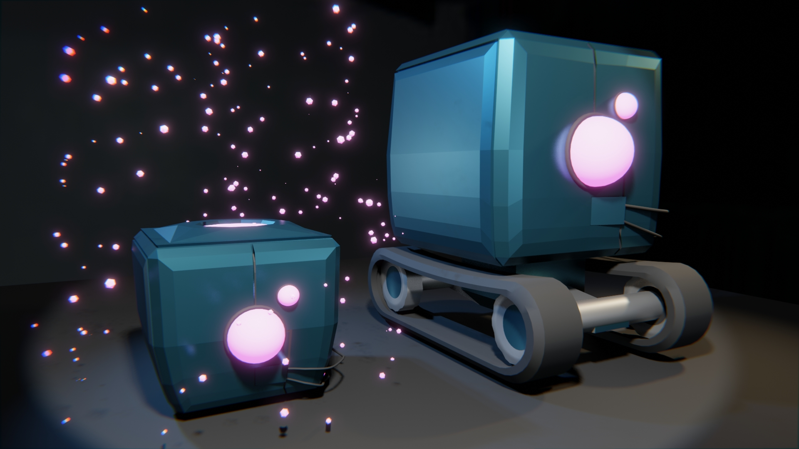
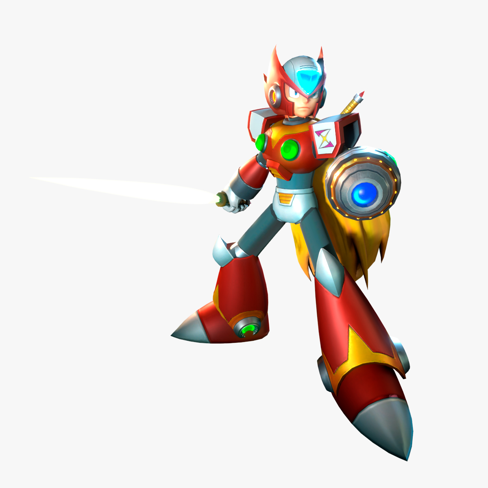

3D Print Study
Generated, prepared, posed and rendered finished examples for 3D printable models

Canhead
Canhead is an original, game-ready 3D character taken from initial concept sketch to final engine export using Blender. Built with clean, deformation-ready topology and efficient UV unwrapping, the model features high-poly detail baked onto an optimized low-poly mesh with custom PBR materials. The asset is fully rigged, dynamically posed, and cleanly structured with zeroed transforms for seamless export into Unreal Engine or Unity.

Draco
Draco is an original, game-ready 3D character taken from initial concept sketch to final engine export using Blender. Built with clean, deformation-ready topology and efficient UV unwrapping, the model features low-poly mesh with simple placeholder materials. The asset is fully rigged, dynamically posed, and cleanly structured with zeroed transforms for seamless export into Unreal Engine or Unity.

Dragon egg
Material in Blender with procedurally generated normals, roughness, patterns and controlled colors.

Megaman X
3D model of Mega Man X and its first armor.

Nissan 350Z
Nissan 350Z modeled and textured after the version present in the game Need For Speed.
Race
Scene animation pitch in Blender. Track and car animation.
Scientist
Character rigging and animation for a game.

Thech the Box
Thech the Box is an original, game-ready 3D character taken from initial concept sketch to final engine export using Blender. Built with clean, deformation-ready topology and efficient UV unwrapping, the model features high-poly detail baked onto an optimized low-poly mesh with custom PBR materials. The asset is fully rigged, dynamically posed, and cleanly structured with zeroed transforms for seamless export into Unreal Engine or Unity.

Zero
3D model based on the Capcon character Zero, from the Mega Man X series. Built with clean, deformation-ready topology and efficient UV unwrapping, the model features high-poly detail baked onto an optimized low-poly mesh with custom PBR materials. The asset is fully rigged, dynamically posed, and cleanly structured with zeroed transforms for seamless export into Unreal Engine or Unity.